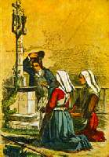
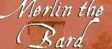

|
Sonioù ar bobl e Breizh Izel kinniget hervez an urzh savet gant Kervarker evit e levr |
Chants de Basse Bretagne présentés dans l'ordre choisi par La Villemarqué pour son recueil |
Folks songs of Lower Brittany in the same order of appearance as in La Villemarqué's collection |
Lieder der keltischen Bretagne in der von La Villemarqué festgelegten Reihenfolge |
|
|
42. Markiz Gwerand
43. Maronad an Aotrou Nevet
|
|

 Les Séries
Les Séries
|
|
||
|---|---|---|
|
Cliquer sur cette vignette pour la liste des chants, une traduction et/ou des commentaires dans "l'autre langue".
|
Click on this thumbnail for a song list, a translation and/or comments in English.
Klicke auf dieses Bild für die Liederliste, eine Übersetzung und/oder Kommentare in engl. Sprache.
|
Qu'est-ce que le Barzhaz-Breizh? (en français)
|

den zo deuet d'hor gweled abaoe 20.10.04,
hervez
Web counter

(10.3) "Merlin the Bard"
also exists as a
PAPERBACK in FOUR LANGUAGES
